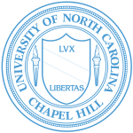

I'm Chris, I am a second generation Korean-American born an raised in the Carolinas. My background lies both in biochemistry and computer science. With a background in these two fields, I would like to involve my self in matters that are directly in the confluence of the two.
Obsessed with bridging the gap between biochemistry and computer science, I am currently enrolled at the Biophysics PhD program at UCSF to have a direct involvement with this gap. Currently, I am rotating with Dr. William “Bill” DeGrado to learn more about de novo protein design using computational methodology.
In addition to the academia side of things, moving to the West Coast was a big transition for me. It brought me a very diverse campus and city that continues to expose to topics and interests that I was unaware of or had no access to previously.
Being part of the Research Triangle, UNC-CH fostered an environment that provided an overwhelming number of opportunities. From peers to professors, the campus pushed an interdisciplinary focus on education that guided me to learn, expand, and even challenge my perspective.
The experience as a Ronald E. McNair Scholar in Dr. David Lawrence’s lab ingrained in me a passion for learning and research. Particularly, it translated topics I learned in the classroom to application-based approaches to biological phenomena. I was involved with two research projects, with one being published in the Journal of Chemical Education, which you can access here.
UNC-CH instilled in me a passion for learning and inspired me to continue to think outside of the box.